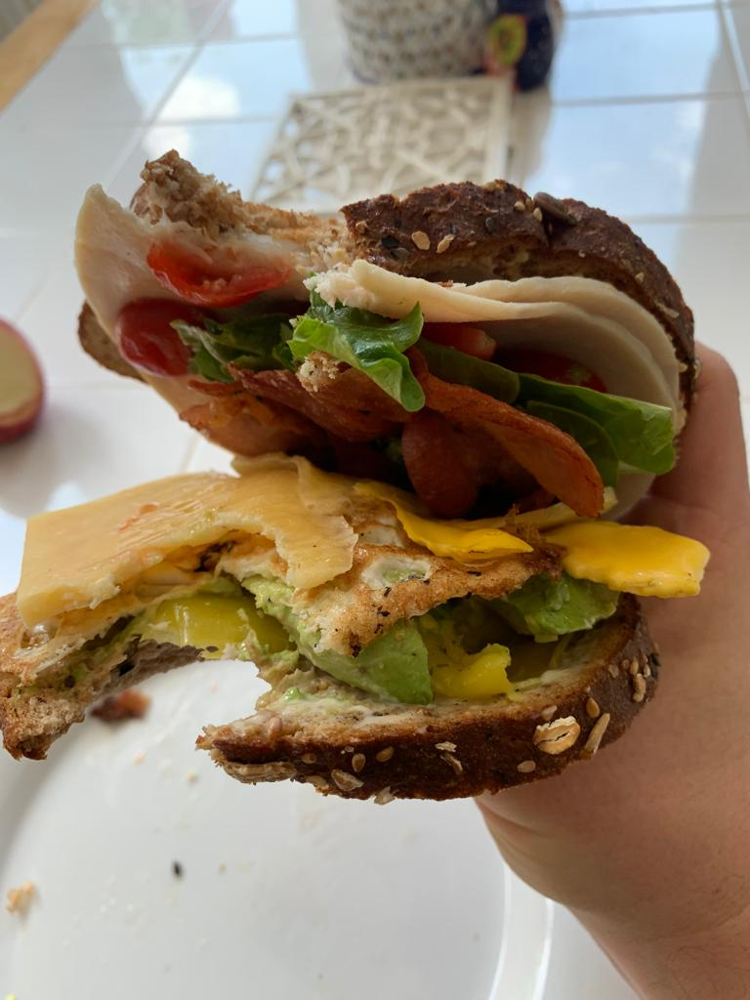

A damn good sammy!
The World's Best Sammy!

Needs No Introduction (But For Some Reason Is Receiving One Anyways)
Putting stuff on bread, wrapping stuff in bread, putting stuff between two slices of bread. There's no substitute, and there's no question: we love to do it, the world over. While I am not one to deny the luminous allure of certain aspects of pre-agricultural society, one would be loath to argue that, dwelling in such earlier times, one wouldn't miss, alongside say, plumbing and significantly longer average life expectancy, bread, and by extension the joyful and irreplicable practice of just putting some stuff on it.
Now, such a universally revered culinary practice is, on one hand, destined to proliferate an overwhelming multitude of regional variants, of which we are all the beneficiaries. At the same time, it is likely to give rise to contestation with regard to which of said sandwiches truly reigns supreme. Is it the bahn mi, hailing from the streets of Hanoi? The Brazilian baura? The philly cheesesteak? The hamburger? The panini? Could we get deep with it and consider for inclusion burritos, shaurma, even fluffy mandu? What even is a sandwich? Wow, I'm hungry.
What if I were to tell you, reader, that miraculously, the very scrivener behind these words (and clearly very elaborate coding ability) happened themself to have stumbled upon the precise combination of elements comprising unquestionably, objectively, and certainly with a 100%-no-narcissism-influenced evaluation, the greatest ever fashioned composite of stuff+bread this world has ever beheld? Out of the deepest generosity for my fellow brothers, sisters, and enby siblings, I, with the greatest humility, will share with you all what I was honored to be the one to discover.
What you're gonna need (let not the simplicity of ingredients deceive you)
- Two pieces of bread. Wheat bread, you fool.
- Two slices of turkey sandwich meat.
- Aged Dubliner cheese
- Two large slices of bacon
- Half a medium sized tomato
- Half a medium size avocado
- 1/4 or less of a medium-sized yellow onion
- Spicy mustard, the kind with mustard seeds in 'em
- Mayo
- Pepperonchinis
- A egg
- Salad greens
- Salt and pepper
What you're gonna do
- Alright, first off: You're gonna fry up that bacon until it's crispy but not burnt. Put it to the side.
- Drain most, but not all, of the bacon fat and fry the egg, covering it and flipping it so both sides are crispy and the yolk is hard.
- While performing both of those steps, toast the bread, then adorn one piece with the mustard, and the other with the mayo.
- Cut a few slices of cheese no thicker than 3mm (if you're American: I dunno, make it thin.) When the egg is finished, place the cheese on top of it so that it melts a bit.
- Cut a few thin slices of the onion, and cover one piece of the bread. It matters not which.
- Cut medium-size tomato slices and layer those on top of the onion. Add salt and pepper.
- Place one piece of turkey meat on top of the tomato, tear up and place two pepperonchinis, then add the second slice of meat on top of them. This is to keep the loose ingredients from falling off when you finally must close this masterpiece.
- Holding the de-pitted avocado half in the shell, cut slices about 5mm thick (USA: medium thickness) from top to bottom, then scoop them out and with them, cover the other piece of bread.
- Lay the cheese-covered egg on top of the avocado, then add the strips of bacon.
- Finally, add a moderate layer of salad green atop the bacon, and close your now magnificent, monstrous sandwich by swiftly but carefully picking up the meat half, and introducing the turkey to the greens.
- Oui-la!
In sombre conclusion
The world today truly faces troubling times, but maybe, just maybe, if we all come together and partake in this hail mary, last-minute gift from the divine, we may yet be able to keep it all together. Don't thank me. Thank you.